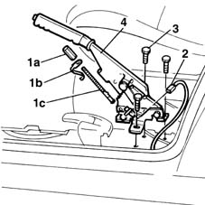

3380A10 handbrake lever - r+r
- Path
- Procedures > 33 BRAKING SYSTEM > 3380 HANDBRAKE > 3380A handbrake control and linkage > 3380A10 handbrake lever - r+r
- Kind
- repair procedure (removal / refitting; the operation number is the code)
- Applies to
- all engines; all production periods
- Interactive page
- https://sloeber94.github.io/elrnDB-fMltpl/en/#/2891662
Applies to: all engines; all production periods
 Removing
Removing
 Refitting
RefittingDisconnect the battery negative (-) terminal.
Open the left side door.
3380A46 handbrake lever protective boot - r r
7040L40 REAR COMPARTMENT SCUFF STRIP - R R
1. Undo the adjustment nut (1a), remove the spring (1b) and release the handbrake cable (1c).
2. Disconnect the electrical connection for the handbrake.
 | Name | Connector |
|---|---|---|
2 | Handbrake switch |
3. Slightly raise the floor carpet in the area of the front seat to gain access to the bolts underneath, hen undo the bolts fixing the lever.
4. Remove the handbrake lever.

Applies to: all engines; all production periods
Refitting
RemovingPositin the handbrake lever in the special housing and tighten the fixing bolts to torque.
 | Fastening | Component | Ø | Value (daNm) |
|---|---|---|---|---|
- | Bolt | HANDBRAKE LEVER | M8 | 2.8 |
Connect the electrical connection for the handbrake.
| Name | Connector |
|---|---|---|
- | Handbrake switch |
Position the cable on the lever.
Proceed with the adjustment of the cable.
3380A04 handbrake - check travel
Topics linked from this page (4)
- 3380A04 handbrake - check travel
- 3380A46 handbrake lever protective boot - r r
- 7040L40 REAR COMPARTMENT SCUFF STRIP - R R
- I40 Handbrake switch